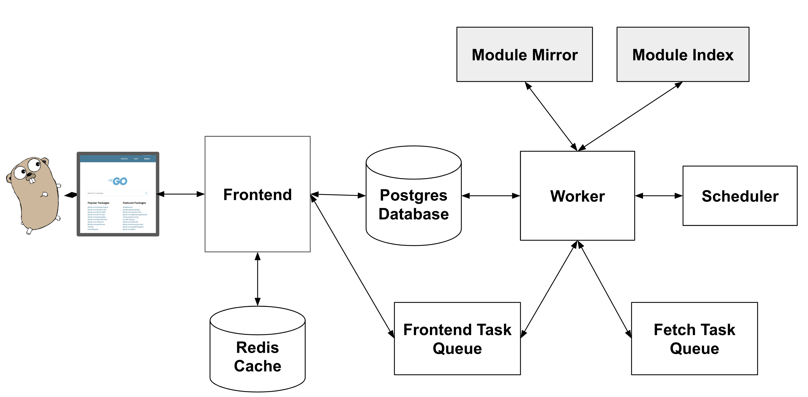

Handling Go#
Go.mod files are handled using compiled cgo libraries. The source for these can be found in the build folder and it needs to be rebuilt for windows, mac and linux if changes are made
Caution
Since Go does not have a public API the required information is being scraped from pkg.go.dev The rest of this page is a stub about pkg.go.dev and why scraping was the chosen option in the current version

API#
https://api.godoc.org/packages → Missing endpoint (21/01/2022)
No official support in the near future
Exposed endpoints#
https://proxy.golang.org/{path}/@v/list
Example: https://proxy.golang.org/gopkg.in/jcmturner/rpc.v1/@v/list
Response:
v1.0.0 v1.1.0
https://proxy.golang.org/{path}/@v/{chosen_version}.info
Example: https://proxy.golang.org/gopkg.in/jcmturner/rpc.v1/@v/v1.0.0.info
Response:
{ "Version": "v1.0.0", "Time": "2018-08-23T12:31:36Z" }
Other
/<module>/@v/<version>.mod,/<module>/@v/<version>.zip,/<module>/@latest
https://index.golang.org/index?since=2022-01-10T19:08:52.997264Z&limit=2
{"Path":"github.com/facebookincubator/magma/orc8r/lib/go","Version":"v0.0.0-20220110185328-13159ce77947","Timestamp":"2022-01-10T19:08:54.098426Z"} {"Path":"github.com/franono/cosmos-sdk","Version":"v0.36.0-rc1","Timestamp":"2022-01-10T19:08:56.869993Z"}git clone https://go.googlesource.com/pkgsitego run ./cmd/frontend -dev -direct_proxy
Other options#
Using the worker to create our own database - Maybe out of scope - worker populates the database with information about new modules
Scrape better 😅